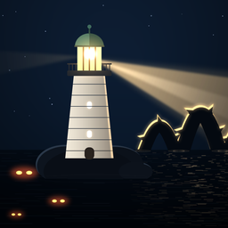

Last Lighthouse
Sea Defense
Keep the last light burning. Creatures rise from the dark sea and the beam is all you have: it sweeps on its own, hold to stop it and burn hotter, tap to turn it back. Pick a new power after every wave, face giants from the deep, and push through fog, storms and frozen water. One thumb, no account, plays offline.
Son ışığı söndürme. Karanlık denizden yaratıklar çıkıyor ve elinde yalnız fenerin ışığı var: kendiliğinden döner, basılı tutunca durur ve daha güçlü yakar, dokununca ters döner. Her dalgadan sonra yeni bir güç seç, derinlerden gelen devlerle yüzleş; sisten, fırtınadan ve buzlu denizden geç. Tek parmak, hesap yok, internetsiz oynanır.